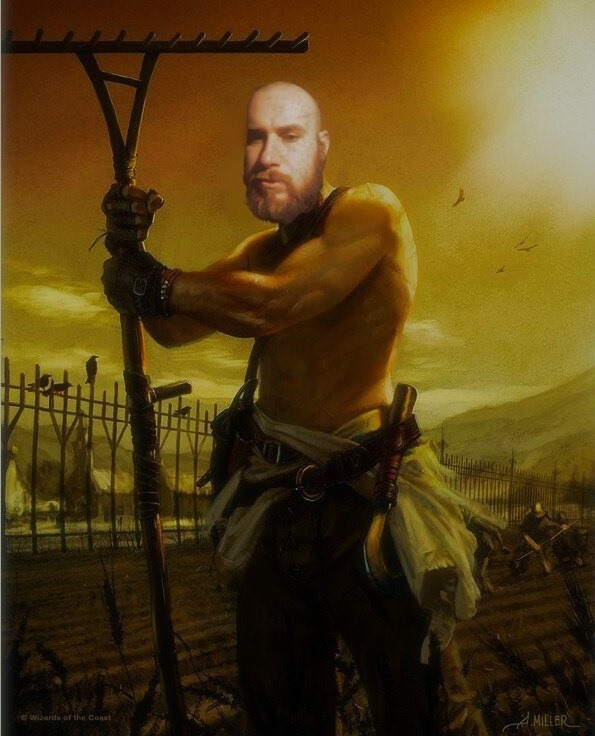
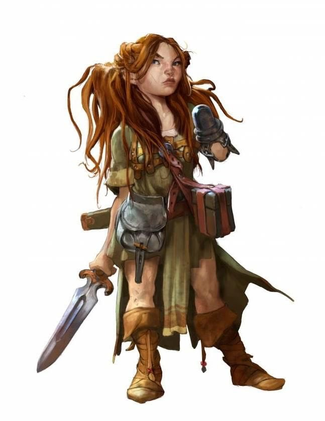
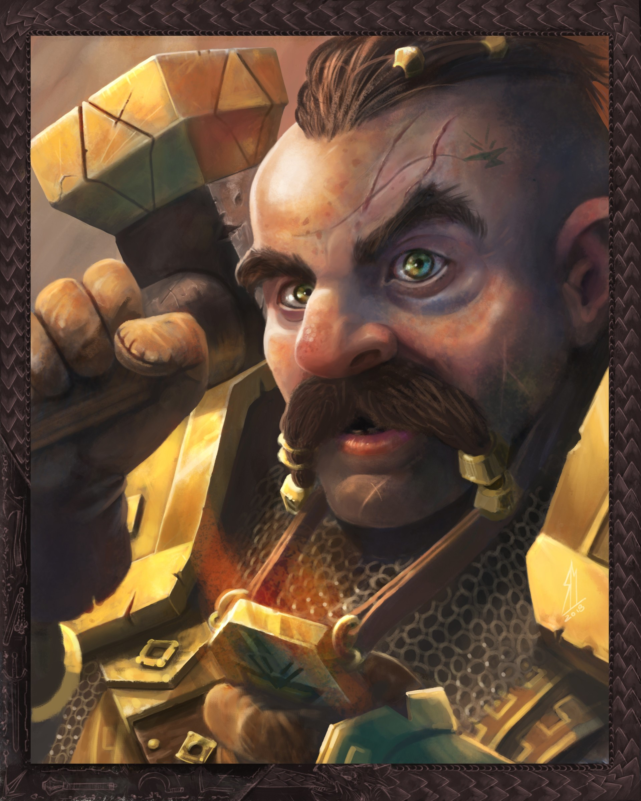
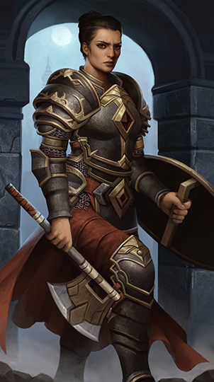

Hrdinové
Malcer Hrompole
Člověk, bojovník, 1. úroveň
Pasivní vnímání: 13
Brnčo: 14
Max. životů: 12
Rychlost: 6
Hlavní zbraně: obouruční meč (2d6+2), dlouhý luk (1d8+3)
Zkušenosti: 0
Bree
Půlčík, tulák, 1. úroveň
Pasivní vnímání: 10
Brnčo: 14
Max. životů: 9
Rychlost: 5
Hlavní zbraně: krátký meč (1d6+3), ruční kuše (1d6+3)
Zkušenosti: 0
Rurik Skálohled
Trpaslík, klerik, 1. úroveň
Pasivní vnímání: 13
Brnčo: 18
Max. životů: 11
Rychlost: 5
Hlavní zbraně: válečné kladivo (1d8+2), ruční sekera (1d6+2)
Zkušenosti: 0
Aksana z Oxenu
Člověk, bojovník, 1. úroveň
Pasivní vnímání: 13
Brnčo: 17
Max. životů: 12
Rychlost: 6
Hlavní zbraně: obouruční sekera (1d12+3), oštěp (1d6+3)
Zkušenosti: 0
Příběh
Úvod
Hrdinové se nacházeli v Letohradu, když přijali úkol od Gundrena Skálohleda. Některé Gundren oslovil přímo, protože jsou staří známí, jiní se o možnosti přivýdělku dozvěděli z inzerátu. Gundren potřebuje ozbrojenou eskortu pro převoz vozu se zásobami do městečka Fendelinu v podhůří Mečových hor.
Hrdinové a Gundren vyrazili hned ráno na cestu ještě ve společnosti Gundrenova přítele Sildara Zimosála. Vůz se zásobami tažený párem volů se pomalu posunoval na jih a na Gundrenovi bylo vidět rostoucí napětí. Vysvětlil hrdinům, že poblíž Fendelinu učinil ohromný objev, musí ale jednat rychle. V pozdním odpoledni už Gundren nemohl déle snášet šouravý postup vozu. Rozhodl, že hrdinové zůstanou s vozem a on vyrazí se Sildarem napřed. Dokud hrdinové s vozem nedojedou do Fendelinu, bude se věnovat záležitostem, které může řešit bez zásob ve voze. Se Sildarem pobídli své koně a brzy získali na hrdiny s vozem velký náskok a ztratili se jim z dohledu.
Hrdinové pokračovali na jih takovým tempem, jakým zvládli voli naložený vůz táhnout. Vše zatím probíhalo v klidu, bez nepříjemností. Nocovali podél cesty a třetího dne dopoledne odbočili z dobře udržované, frekventované silnice na trochu horší Trojkaneckou stezku vedoucí k východu. Z obou stran kolem stezky roste les a husté houští a stezka je mnohem opuštěnější než předešlá silnice.
Co bylo dál?
Kolem poledne projeli hrdinové zatáčkou a za zákrutou spatřili dvě koňské mrtvoly...
Úkoly
Sejdeme se ve Fendelinu
Probíhá
Gundren Skálohled si hrdiny najal, aby bezpečně dopravili vůz se zbožím do Fendelinu. Hrdinové mají vůz předat Elmaru Bartenovi v jeho obchodě, který každému vyplatí 10 zl.
Záchrana Gundrena
Nezadáno
Gundren Skálohled do Fendelinu nedorazil. Společně se Sildarem Zimosálem byl přepaden na Trojkanecké stezce. Goblini ho odvlekli, patrně do Rokliského hradu.
Trable u Starovýří studny
Nezadáno
Daran Vavřinec požádal hrdiny o prověření zvěstí, že někdo kope kolem Starovýří studny a že se tam vyskytují nemrtví. Jedná se o ruinu z dob prastaré říše Netherilu a Daran má strach, že zde dřímá mocná magie.
Navrácené zboží
Nezadáno
Lina Šedivá má podezření, že poslední zásilka zboží do jejího obchodu byla po cestě ukradena některými z mnoha lapků, kteří se v okolí vyskytují. Nabízí odměnu za nalezení zboží.
Rudocejšská hrozba
Nezadáno
Celé městečko Fendelin je poslední dva měsíce sužováno bandou raubířů Rudocejchů. Tito se tváří jako místní domobrana, ale terorizují místní a ostře zakročí proti komukoliv, kdo se ozve na protest. Scházejí se v hospodě U Spícího obra.
Prácička pro Halinu
Nezadáno
Halina Trnistá nabízí odměnu 100 zl, pokud hrdinové zlikvidují vůdce Rudocejchů zvaného Sklivec a přinesou jí veškerou jeho korespondenci. Podle Haliny mají Rudocejši základnu pod Tresendarským panským domem.
Návštěva druida Červenky
Nezadáno
Kelyna Olšová hrdinům poradila, že zdejší divočinu nejlépe zná druid Červenka. Mohl by jim poradit, kde najít místa, která hledají. Druid se přednedávnem odebral do ruin Hromostromu a pravděpodobně tam nějakou dobu pobude.
Otázka pro lítici
Nezadáno
Sestra Garaela nabízí 3 léčivé lektvary jako odměnu, pokud hrdinové navštíví lítici Agátu a získají od ní informace o knize kouzel mága Úklonka. Jako dárek pro lítici zapůjčila Garaela hrdinům vykládaný stříbrný hřebínek.
Zamoření orky
Nezadáno
Herbert Vestička shání odvážlivce, kteří by se vypořádali s bandou orků usazenou poblíž Vyverní skály.
Zmizení kouzelníka Jarna
Nezadáno
Sildar Zimosál prosí hrdiny o pomoc s pátráním po kolegovi Jarnovi Albrekovi. Podle místních byl naposledy viděn, jak prozkoumává východní okraj vesnice.
Ostatní postavy
Gundren Skálohled
Trpaslík středního věku. Příbuzný Rurika. Najal hrdiny, aby dopravili vůz se zásobami do Fendelinu, sám vyrazil napřed.
Sildar Zimosál
Starší člověk, veteránský žoldnéř. Člen Panské jednoty, politické organizace sjednocující města na Severu.
Elmar Barten
Majitel obchodu Bartenův proviant ve Fendelinu. Štíhlý, plešatějící, starší člověk. Zaměstnává pomocníky Andyho a Kopřivku.
Toby Kameník
Výčepní v hostinci U Kameníka. Drobný člověk. Původně chtěl být zlatokopem, ale hostinské řemeslo mu jde podstatně lépe. Má manželku Lenu, syna Cvrčka.
Daran Vavřinec
Stříbrovlasý půlelf. Vysloužilý dobrodruh. Člen Řádu rukavice, skupiny ochraňující slabé.
Lina Šedivá
Mladá obchodnice. Vede obchod Lví Štít se zbraněmi a zbrojí. Odmítá prodat zbraně těm, o kterých si myslí, že by byli pro městečko hrozbou.
Halina Trnistá
Vedoucí hornické směnárny, středního věku.
Kelyna Olšová
Půlčice středního věku. Selka, majitelka Olšového statku. Teta Bree. Má syna Kapříka.
Sestra Garaela
Elfka, kněžka kaple Tymory, bohyně štěstí a přízně osudu.
Grista
Výčepní v hospodě U Spícího obra. Trpaslice.
Herbert Vestička
Obtloustlý člověk. Starosta obce, bankéř.
Jarno Albrek
Malý, mladý lidský kouzelník s tmavými vousy. Člen Panské jednoty, vyslán do Fendelinu, aby zde zavedl zákon a řád.
Druid Červenka
Vychrtlý starý muž s bílým vousem. Člen Smaragdové enklávy, volné skupiny příznivců divočiny zaměřených na zachování přirozeného řádu věcí a přírodní rovnováhy.